Build LAN Project
Network design proposal for a financial department expansion.
Project Summary
With the new building being purchased and used as a warehouse, the financial department moved to floor 10. Since floor 10 was previously the warehouse, there was no need for a telecommunications room there. This project proposes a new telecommunications room on floor 10 so the financial department can access the company’s network resources.
Project Requirements
The new telecommunications room needs to provide the following:
- At least 250 gigabit Ethernet edge ports, including at least 50 PoE ports.
- At least 100 gigabit Ethernet ports for data center equipment.
- Rack-mountable switches with at least two 10 Gb fiber uplinks to the central data center on floor 2.
- Fiber patch panels and patch cables for the uplink connections.
- Three 19-inch, four-post equipment racks.
- UPS capacity for all switches and five servers, with at least 40% capacity remaining.
- Additional AC circuits for the new equipment.
- Spare equipment for emergency replacement.
With this equipment installed, the financial department would have a complete network connection from floor 10 to the main distribution frame on floor 2.
Network Installation Process
Phase 1: Information gathering
The first phase covers the available space, room requirements, equipment that must be purchased, and the amount of cable needed to reach the main distribution frame on floor 2. This phase should take no more than two days.
Phase 2: Selection and design
The second phase covers selecting the equipment for either the Cisco or HP implementation and ordering it before implementation begins. The telecommunications room will also be designed during this phase. It must be secured and accessible only to IT staff. This phase should take no more than three days.
Phase 3: Implementation
The third phase begins construction and installation. The room walls will be built, a key-card reader will be installed, the racks will be assembled, and the equipment will be mounted. Because the room must be built before the equipment can be installed, this phase is expected to take up to fourteen days.
Phase 4: Operation
The fourth phase covers configuring the equipment, running fiber to the main distribution frame on floor 2, connecting the equipment, and installing additional AC outlets. This is the longest phase and is expected to take up to eighteen days.
Phase 5: Review and evaluation
The final phase verifies the equipment configuration and confirms end-to-end connectivity between floors 2 and 10. It also includes any troubleshooting needed along the way. This phase is expected to take up to seven days.
Option 1: Cisco Solution
This is the preferred solution because the central data center already uses Cisco routing equipment.
Edge switches: Cisco Catalyst 9300-48P-A
Quantity
7
Individual price
$4,810.00
Listed total
$28,571.40
PoE budget
437 watts
The Catalyst 9300-48P-A is a fully managed Layer 3 switch with 48 PoE+ Ethernet ports, four 10 Gb SFP uplinks, and three rear stacking ports. It includes a 715-watt power supply, supports StackWise-480 and StackPower, and provides 480 Gbps of stacking bandwidth.
- 32,000 MAC addresses and 32,000 IPv4 routes
- 16,000 IPv6 routing entries
- 8,000 multicast routes
- 5,120-entry QoS and ACL scales
- 16 MB packet buffer, 8 GB DRAM, and 16 GB flash
- 4,094 VLAN IDs
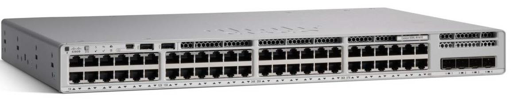
Data center switches: Cisco Business CBS350-48T-4X
Part number
8MZ935
Quantity
4
Individual price
$1,203.21
Listed total
$3,609.63
Each switch provides 48 gigabit Ethernet ports and four SFP uplinks. Three switches provide the required 100 data center ports, while the additional unit is included with the project’s spare equipment. The switch supports Layer 3 features and stacking, draws up to 51 watts, and occupies 1U.
- 176 Gbps switching capacity and 130.94 Mpps forwarding rate
- 16,000 MAC addresses and 4,094 VLAN IDs
- 512 MB memory and 256 MB flash
- 100-240 VAC input and a listed MTBF of 1,452,667 hours
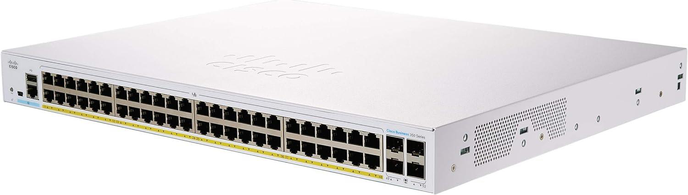
Fiber equipment
The design uses eighteen 3 km SC-connector SFP modules, purchased as two-packs at $18 each, for a listed total of $324. The modules provide the fiber connections between switches and the building’s main distribution frame.
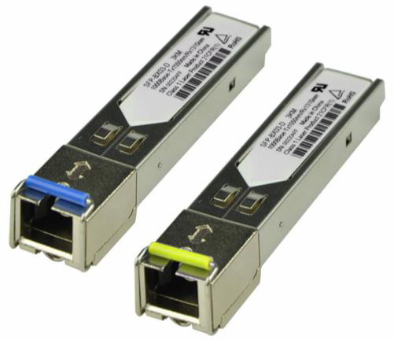
The design also includes 25 fiber patch cables at $8.49 each, four 24-port SC multimode fiber patch panels, and cabling compatible with standard 19-inch racks.
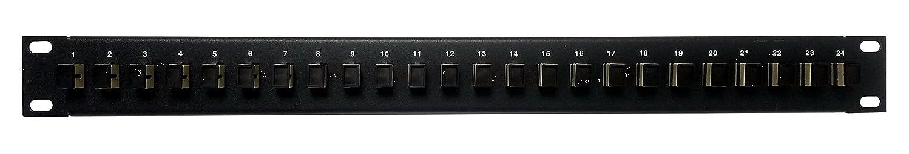
Copper patch panels and racks
The copper side uses TRENDnet 48-port Cat 6 unshielded patch panels. Each panel costs $70.14, with a listed total of $701.40.
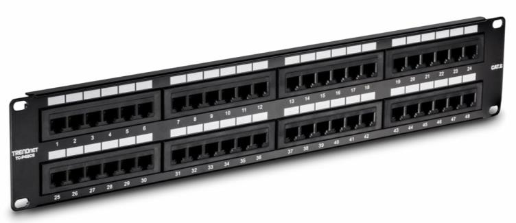
Three Quest FR1924-28-02 adjustable steel floor racks provide 28U of space and adjustable depth from 24 to 36 inches. Each rack costs $395.84, for a total of $1,187.52.
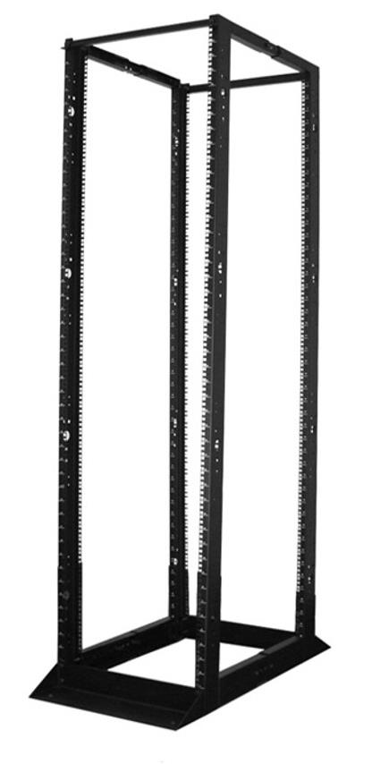
UPS equipment and AC power
The Cisco option uses CyberPower Smart App Sinewave PR3000RTXL2UN UPS units. Each unit is rated for 3,000 watts / 3,000 VA, occupies 2U, accepts 100-120 VAC, and provides nine output connectors. Runtime is listed as 1.7 minutes at full load or seven minutes at half load.
Quantity
4
Individual price
$1,630.95
Listed total
$4,892.85
Recharge time
3 hours
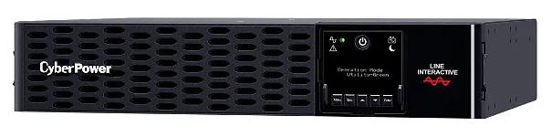
The Cisco design requires five 120 V, 20 A circuits: 8,670 watts divided by 1,680 usable watts per circuit at 70% capacity equals 4.66, rounded up to five circuits.
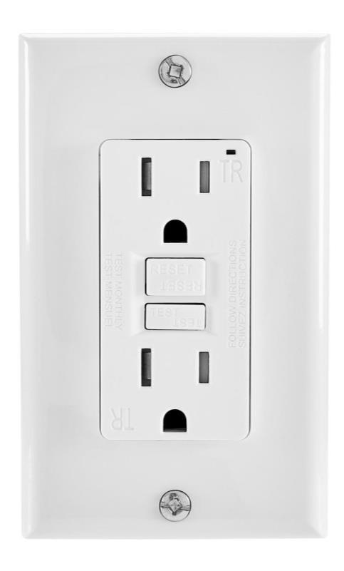
Spare equipment and total
- One Cisco Catalyst 9300-48P-A
- One CyberPower PR3000RTXL2UN UPS
- One Cisco Business CBS350-48T-4X
- One fiber patch panel and one copper patch panel
- One pack of Cat 6 cable
- Seven SC fiber patch cables
The listed spare-parts cost is $7,971.03. The listed total for the Cisco solution is $50,830.71.
Option 2: HP Solution
Edge switches: HPE Aruba 2530-48G-PoE+
Quantity
7
Individual price
$2,655.74
Total
$18,590.18
Power draw
441 watts
The Aruba 2530 is a fully managed Layer 2 switch with 48 PoE+ RJ-45 ports, four fixed gigabit SFP ports, IPv6 support, and enhanced access security. It supports stacks of up to 16 switches and occupies 1U.
- 104 Gbps switching capacity
- 16,000-entry MAC address table
- 128 MB flash, 256 MB DDR3 DIMM, and 3 MB dynamically allocated packet buffering
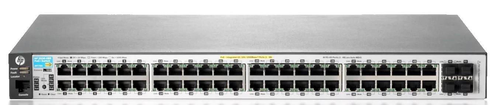
Data center switches: HPE Aruba 6300F 48-port
Part number
JL667A
Quantity
4
Individual price
$4,706.62
Total
$18,826.48
The Aruba 6300F provides 48 gigabit Ethernet ports, four SFP uplinks, 494 Gbps switching capacity, and support for stacks of up to ten switches. It can draw 740 watts with full PoE capability and occupies 1U.
- 8 GB DDR4 and 32 GB eMMC storage
- 8 MB shared packet buffer
- 20,480 IPv4 addresses and 5,120 IPv6 addresses
- 20,480 MAC addresses
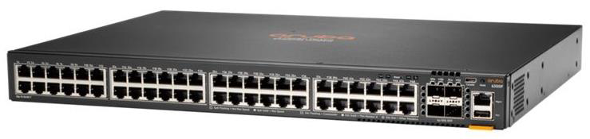
Shared cabling and rack equipment
The HP solution uses the same SFP modules, fiber patch cables, fiber patch panels, copper patch panels, and three Quest equipment racks as the Cisco option.
UPS equipment and AC power
The HP option uses Tripp Lite SMART5000TEL3U rack-mount UPS units. Each unit is rated for 5,000 VA / 3,750 watts, occupies 3U, and provides 120 V outlets plus five 208 V connectors. Runtime is listed as 8.5 minutes at full load or 16 minutes at half load.
Quantity
4
Individual price
$3,557.52
Total
$14,230.08
Height
3U
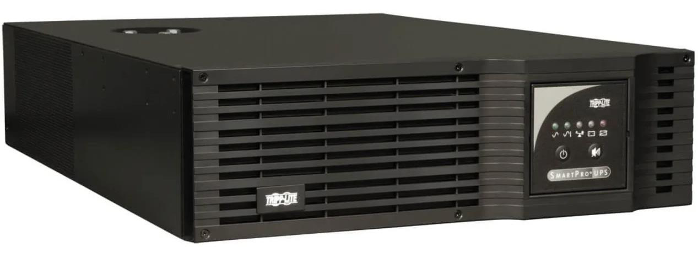
The HP design requires six 120 V, 20 A circuits: 9,262 watts divided by 1,680 usable watts per circuit at 70% capacity equals 5.51, rounded up to six circuits.
Spare equipment and total
- One HPE Aruba 2530-48G-PoE+
- One HPE Aruba 6300F 48-port switch
- One Tripp Lite UPS
- One fiber patch panel and one copper patch panel
- One pack of Cat 6 cable
- Seven SC fiber patch cables
The listed spare-parts cost is $11,242.42. The listed total for the HP solution is $53,789.97.
Network Design Overview
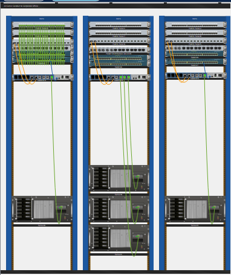
Three of the five servers are placed in the middle rack, with the remaining servers split between the outside racks. Each rack contains two copper patch panels, one fiber patch panel, two edge switches, and one data center switch.
The servers connect to the data center switches, which connect to the fiber uplinks leading to the main data center. The edge switches connect through the copper patch panels to wall jacks throughout the financial department. The heaviest devices sit at the bottom to keep the racks stable. The UPS systems are not pictured; one would be installed below the servers in each rack.
Conclusion
Of the two solutions, the Cisco option is the better fit. The central data center on floor 2 already uses two Cisco routers, so staying with the same vendor provides a familiar command set and should make the environment easier to manage.
The HP equipment would still be compatible with the existing Cisco routers, but the Cisco solution is approximately $3,000 cheaper and draws less power. Overall, the Cisco option better meets the needs of the new telecommunications room on floor 10.